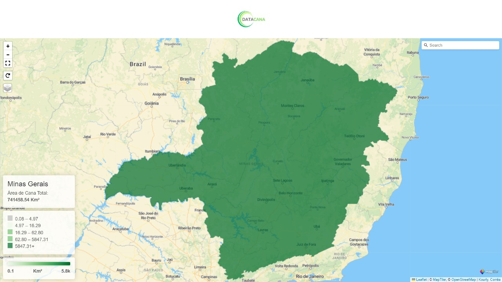
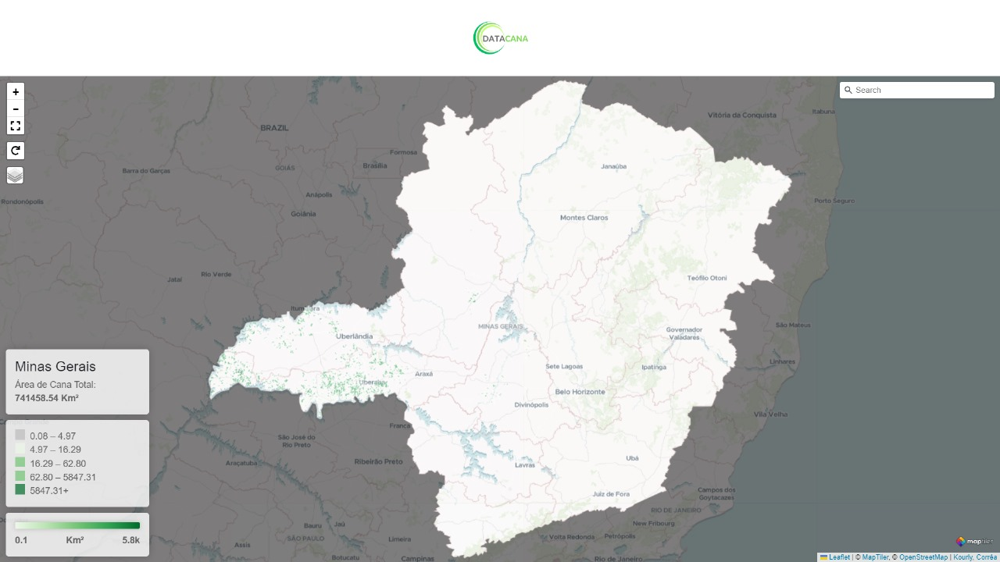

Sobre os Produtos DataCana
São vários os produtos que os usuários da plataforma podem consultar e realizar o download para os municípios, regiões imediatas e intermediárias de Minas Gerais, acerca da produção canavieira:
Mapas Temáticos





Gráficos


Tabelas